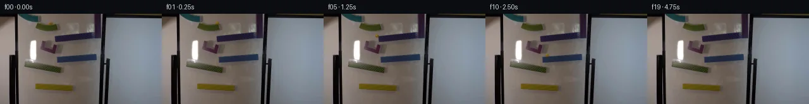

![首帧]()

Round 00
2026-11-05T10:38:36.099245+00:00像素候选变化代码 +193/−0inspection 更新
pixels 62fd2cd7eff9685c · code 44be1e1e63d3b70d
查看本轮 generate.py 真实 diff
--- previous/generate.py
+++ current/generate.py
@@ -0,0 +1,193 @@
+"""Local photograph-preserving marble continuation; no model or external renderer."""
+from pathlib import Path
+import json
+import numpy as np
+from PIL import Image, ImageDraw
+from scipy.ndimage import gaussian_filter, map_coordinates
+from artifact_io import save
+
+ROOT = Path(__file__).resolve().parent
+S = 6
+H, W = 144, 256
+original = np.asarray(Image.open(ROOT/'first_frame.png').convert('RGB')).copy()
+
+# Reconstruct only the soft amber footprint above the original green lip.
+background = original.astype(np.float64).copy()
+for y in range(12, 18):
+ for x in range(74, 86):
+ u = (x-73)/13
+ fill = (1-u)*original[y,73].astype(float) + u*original[y,86].astype(float)
+ weight = min(1., (x-73)/2., (86-x)/2.)
+ if y == 12: weight *= .4
+ background[y,x] = background[y,x]*(1-weight) + fill*weight
+background = np.clip(np.rint(background),0,255).astype(np.uint8)
+base = np.asarray(Image.fromarray(background).resize((W*S,H*S),Image.Resampling.BICUBIC),dtype=float)
+Y,X = np.mgrid[0:H*S,0:W*S].astype(float)
+X=(X+.5)/S-.5
+Y=(Y+.5)/S-.5
+
+# Foreground faces, traced from the photographed fixed pieces.
+polygons = [
+ [(56,21),(58,15.1),(64,16.8),(70,17.7),(76,18.0),(80,18.0),(85,17.5),(89,16.4),(92,23.5),(88,26),(75,27.7),(63,25.8)],
+ [(87,35.5),(150,29.7),(150,39),(87,44.5)],
+ [(64,55),(67,43),(72,44),(70,51.8),(83.3,55.8),(85.2,49.1),(90,50.2),(87,63)],
+ [(90,69),(153,64),(153,74),(90,78)],
+ [(39,76.1),(96.5,85.4),(96,94),(38.8,85)],
+ [(56,112),(114.7,115),(114.5,123),(56,120)],
+]
+foreground_img=Image.new('L',(W*S,H*S))
+draw=ImageDraw.Draw(foreground_img)
+for poly in polygons:
+ draw.polygon([((x+.5)*S,(y+.5)*S) for x,y in poly],fill=255)
+foreground=gaussian_filter(np.asarray(foreground_img,dtype=float)/255,.65)
+
+GREEN_END=3.47
+YELLOW_START=3.875
+YELLOW_END=4.17
+
+def top_edge(x):
+ return np.interp(x,[79.5,85,89.1],[18.0,17.5,16.4])
+
+def upper_edge(x): return 35.5-(x-87)*5.8/63
+
+def blue_edge(x): return 69-(x-90)*5/63
+
+def green_edge(x): return 76.1+(x-39)*9.3/57.5
+
+def yellow_edge(x): return 112+(x-56)*3/58.7
+
+def bezier(p0,p1,p2,p3,u):
+ return (1-u)**3*np.array(p0)+3*(1-u)**2*u*np.array(p1)+3*(1-u)*u*u*np.array(p2)+u**3*np.array(p3)
+
+def position(t):
+ # Constrained motion on slopes; acceleration 320 px/s^2 in free flight.
+ if t <= .30:
+ x=79.5+32*t
+ return (x,top_edge(x)-2.3),'upper green',True
+ if t <= .64:
+ u=t-.30
+ return (89.1+35*u,14.1-3*u+160*u*u),'first drop',False
+ if t <= 1.16:
+ u=t-.64; x=101.-12*u-30*u*u
+ return (x,upper_edge(x)-2.3),'patterned ramp',True
+ if t <= 1.48:
+ u=t-1.16
+ return (86.648-28*u,upper_edge(86.648)-2.3+4*u+160*u*u),'drop into scoop',False
+ if t <= 1.86:
+ u=(t-1.48)/.38
+ return tuple(bezier((77.688,50.96),(73.5,57),(88,58),(88.8,46.6),u)),'purple scoop',True
+ if t <= 2.27:
+ u=t-1.86
+ return (88.8+31*u,46.6-20*u+160*u*u),'scoop rebound',False
+ if t <= 2.73:
+ u=t-2.27; x=101.51-12*u-28*u*u
+ return (x,blue_edge(x)-2.3),'blue ramp',True
+ if t <= 3.00:
+ u=t-2.73
+ return (90.0652-20*u,blue_edge(90.0652)-2.3+8*u+160*u*u),'blue to green drop',False
… diff truncated; 106 more lines …